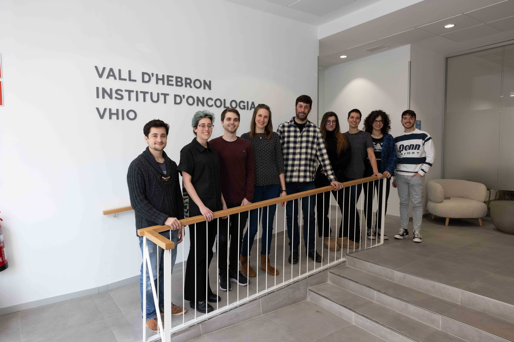
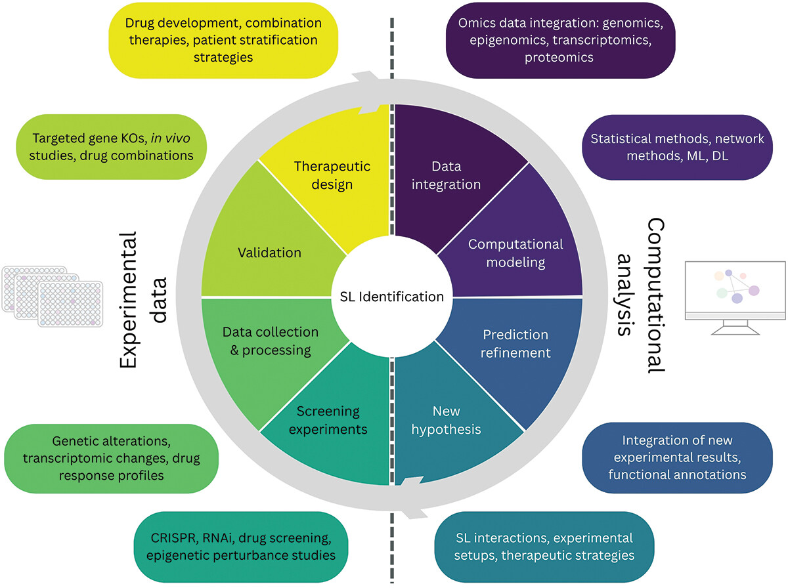
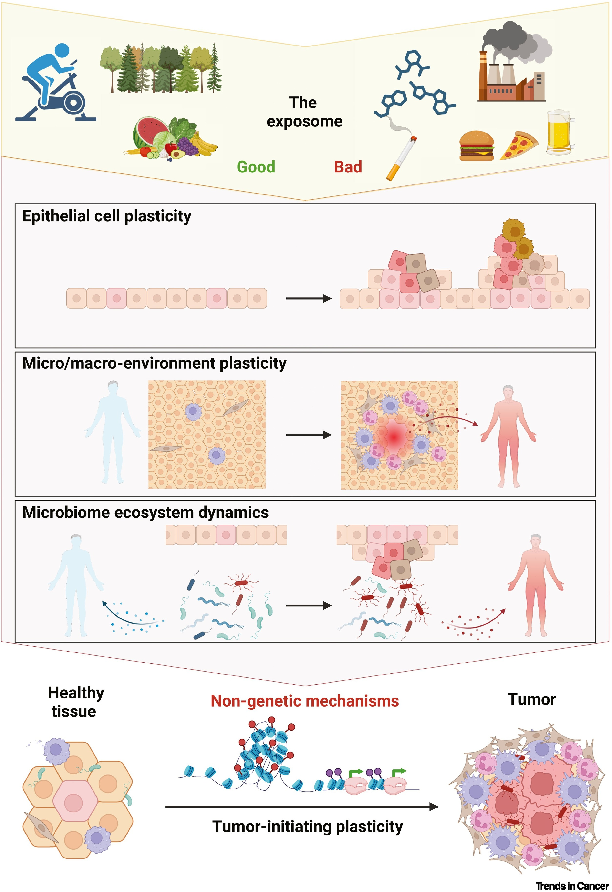
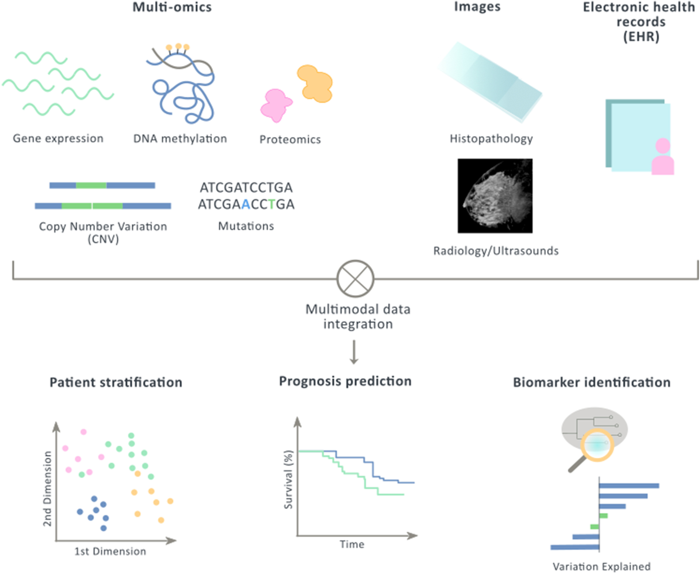
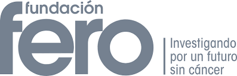

Welcome to the Cancer Computational Biology Group webpage!

About us:
The Cancer Computational Biology group leverages epi(genetic) cancer datasets in order to discover the molecular mechanisms involved with cancer initiation, progression, drug resistance and metastasis in order to improve patient outcomes. We aim to advance insights into the role of chromatin regulatory elements in treatment response and metastasis, develop novel epigenetic synthetic lethality-based therapeutic strategies, improve patient stratification through multi-omics analysis, and identify novel epigenetic biomarkers of treatment response. We have shown how the genes that modify the chromatin structure are associated with chemotherapy resistance in breast cancer (Nature Medicine, 2019). We are interested in understanding how these epigenetic modifications affect drug resistance and how epigenetic drugs can be used to target tumour suppressor genes. We are also interested in machine learning based integration of multi-omic datasets in order to discover new cancer subgroups and biomarkers, and prediction of outcome and drug response. We have participated in multiple international consortia including The Cancer Genome Atlas, Human Tumor Atlas Network, Cancer Target Discovery and Development and most recently AURORA (Metastatic breast cancer multi-omic cohort).
News:

Our new review
We just published a new review about epigenetic synthetic lethality. In this paper led by Maria Farina-Morillas in collaboration with the Vall d'Hebron Instituto de Reserca, our team explores how synergies of experimental and computational approaches can provide new opportunities for targeted intervention in cancer treatment.
A new Master Student
Núria Montalà Palau, a student from the UPF's Bioinformatic for Health Sciences MSC, has join our team. She will work with us for a year, exploring new deep learning techniques for early detection of cancer in serum microRNA.
Beca "Josep Bombardo Navines"!
The project of BRAF colorectal cancer characterization has been funded by the Fundacion Olga Torres with
the Beca "Josep Bombardo Navines" for Consolidated Researchers.
Thank you so much to Fundacion Olga Torres for the support!.

Our second review!
Our second review this year has been published, co-led by Silvana CE Maas about the Exposomal determinants of non-genetic plasticity in tumor initiation. You can check the paper here.

A new review!
Our lab just published a review, led by Arnau Llinas and Maria Butjosa. They are exploring the literature about Multimodal data integration in early-stage breast cancer. You can find the paper here.

A new student!
We welcome Xavi Viñas, a Master student helping us exploring the epigenetic impact of environmental exposures in lung cancer.
A new student!
We welcome Taras Yuziv Duda, our new Bachelor student working on BRAF mutation in Colon Cancer, specifically the BRAF V600E mutation. By comparing the transcriptional programs between BRAFV600E and BRAF nonV600E, he’s trying to figure out why the nonV600E type has a better prognosis than V600E. After, he will also delve deeper in the transcription factor activity behind each mutation type.
Our founders:
